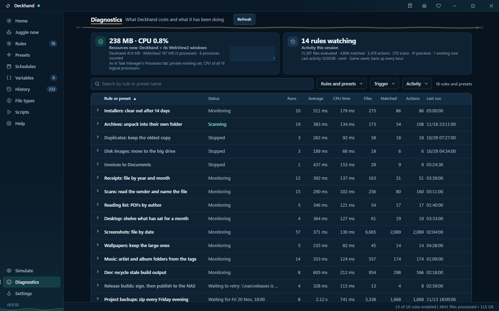

Diagnostics
What Deckhand costs: CPU and memory for the whole app, and run time and CPU time for each rule.
Diagnostics shows what Deckhand costs your PC and how long each rule or preset takes. Use it to find a rule that is slower than it should be.
The top of the page has two tiles: the memory and CPU of Deckhand as a whole, with a small chart, and how much work Deckhand did this session. Below them, every rule and preset has a row with the columns described further down.


Whole-app CPU and memory
At the top you see one memory figure and one CPU figure for Deckhand as a whole.
- Memory is the private working set, as in Task Manager's Processes tab.
- CPU is a share of all logical processors, as in Task Manager's Processes tab.
- A small chart shows the last few minutes. The numbers refresh about every two seconds while the page is visible.
- Hover the figures for a split between the Deckhand engine and the windows that draw the interface.
Per rule and per preset
Each rule and preset has a row with these columns:
| Column | Meaning |
|---|---|
| Runs | How many times it ran this session. |
| Average | Average duration of a run. |
| CPU time | CPU time of the working thread, for example 1.2 s. This is time spent computing, not a percentage. |
| Files | Files looked at. |
| Matched | Files that matched the conditions. |
| Actions | Actions completed. |
Click a column title to sort. Filter by name or by status. Expand a row for the details of each run and the totals: total time, average run, slowest run, CPU time in total.
The next screenshot has the row Screenshots: file by date expanded. Under the status line are eight totals (runs this session, total time, average run, slowest run, CPU time in total, files looked at, matched and actions done), then the Recent runs table with the time, trigger, duration, CPU time, files, matched and actions of each run. A Slowest runs tab sorts the same list by duration.

Triggers
Each run records why it started:
| Trigger | Meaning |
|---|---|
| initial scan | The first scan of the watched folders after the rule starts. |
| rescan | A later scan (interval or recheck). |
| preview | A rule or preset preview that checked files without running actions. |
| change event | A file appeared or changed in a watched folder. |
| retry | A file that had to wait and was looked at again. |
| schedule | A scheduled run. |
| manual | Started by hand (Run, Run once, Run now). |
Keeping the cost low
- The heaviest work is the first look through a big folder, reading PDF and Office text, and OCR.
- Settings → Performance: engine priority Low (the default) keeps your PC responsive. Normal gives rules the same priority as your programs. Pause rules on battery makes rules wait until the PC is plugged in.
- Skip folders you do not need (the gear next to a watch folder). Skipped folders are never scanned.
- Untick Read text from images and scanned PDFs (OCR) in the gear of File contents conditions that do not need it.